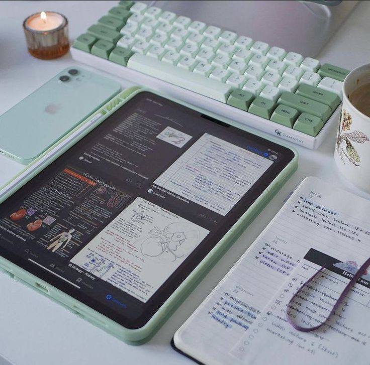

How to Organize Your Desk for Maximum Productivity
Posted on April 10, 2024
A well-organized desk can significantly improve your productivity. Here are some tips to help you get started...
1. Declutter Your Desk
The first step in organizing your desk is to declutter it. Remove any items that you don't use regularly and find a designated spot for everything. Keep only essential items on your desk to reduce distractions and make it easier to find what you need.
2. Use Storage Solutions
Invest in storage solutions like drawers, shelves, and desk organizers. Use these to keep your desk tidy and to store items that you don't use every day. Label your storage containers so you can quickly find what you're looking for.
3. Arrange Your Supplies
Organize your supplies in a way that makes sense for your workflow. Keep frequently used items within easy reach and store less frequently used items further away. Consider using a pegboard or wall-mounted organizer to save desk space.
4. Optimize Your Layout
Arrange your desk layout to optimize your productivity. Place your computer monitor at eye level to reduce strain on your neck and back. Keep your keyboard and mouse at a comfortable height and distance. Ensure you have adequate lighting to reduce eye strain.
5. Personalize Your Space
Add personal touches to your desk to make it a pleasant place to work. This could include photos, plants, or motivational quotes. A personalized workspace can boost your mood and make you more productive.
By following these tips, you can create an organized and efficient workspace that boosts your productivity. Start with small changes and gradually create a desk setup that works best for you.